pacman::p_load(arrow, lubridate, sf, tmap, tidyverse, maptools, sp, raster, spatstat, spNetwork, classInt, viridis, readr)Take-home Exercise 1 Part 2: Application of Spatial Point Patterns Analysis to discover the geographical distribution of Grab hailing services in Singapore
4. Deriving Network Kernel Density Estimation (NKDE)
Run these code first to made sure the CRS of punggol and sgroads match in other to extract the punggol area to plot on tmap() later
mpsz <- st_read(dsn = "data/geospatial/MPSZ-2019", layer = "MPSZ-2019")Reading layer `MPSZ-2019' from data source
`/Users/fangqilim/fangqi611/IS415-GAA/Take-home_Ex/Take-home_Ex01/data/geospatial/MPSZ-2019'
using driver `ESRI Shapefile'
Simple feature collection with 332 features and 6 fields
Geometry type: MULTIPOLYGON
Dimension: XY
Bounding box: xmin: 103.6057 ymin: 1.158699 xmax: 104.0885 ymax: 1.470775
Geodetic CRS: WGS 84pg <- mpsz %>%
filter(PLN_AREA_N == "PUNGGOL")
tm <- mpsz %>%
filter(PLN_AREA_N == "TAMPINES")
ck <- mpsz %>%
filter(PLN_AREA_N == "CHOA CHU KANG")
jw <- mpsz %>%
filter(PLN_AREA_N == "JURONG WEST")sgroads <- read_rds("data/rds/sgroads.rds")pg <- st_transform(pg, crs = st_crs(sgroads))
st_crs(pg)Coordinate Reference System:
User input: EPSG:3414
wkt:
PROJCRS["SVY21 / Singapore TM",
BASEGEOGCRS["SVY21",
DATUM["SVY21",
ELLIPSOID["WGS 84",6378137,298.257223563,
LENGTHUNIT["metre",1]]],
PRIMEM["Greenwich",0,
ANGLEUNIT["degree",0.0174532925199433]],
ID["EPSG",4757]],
CONVERSION["Singapore Transverse Mercator",
METHOD["Transverse Mercator",
ID["EPSG",9807]],
PARAMETER["Latitude of natural origin",1.36666666666667,
ANGLEUNIT["degree",0.0174532925199433],
ID["EPSG",8801]],
PARAMETER["Longitude of natural origin",103.833333333333,
ANGLEUNIT["degree",0.0174532925199433],
ID["EPSG",8802]],
PARAMETER["Scale factor at natural origin",1,
SCALEUNIT["unity",1],
ID["EPSG",8805]],
PARAMETER["False easting",28001.642,
LENGTHUNIT["metre",1],
ID["EPSG",8806]],
PARAMETER["False northing",38744.572,
LENGTHUNIT["metre",1],
ID["EPSG",8807]]],
CS[Cartesian,2],
AXIS["northing (N)",north,
ORDER[1],
LENGTHUNIT["metre",1]],
AXIS["easting (E)",east,
ORDER[2],
LENGTHUNIT["metre",1]],
USAGE[
SCOPE["Cadastre, engineering survey, topographic mapping."],
AREA["Singapore - onshore and offshore."],
BBOX[1.13,103.59,1.47,104.07]],
ID["EPSG",3414]]Extracting punggol out of mpsz using st_intersection() so we can plot on tmap() later
roadspg <- sgroads[st_intersection(sgroads, pg), ]
plot(st_geometry(roadspg))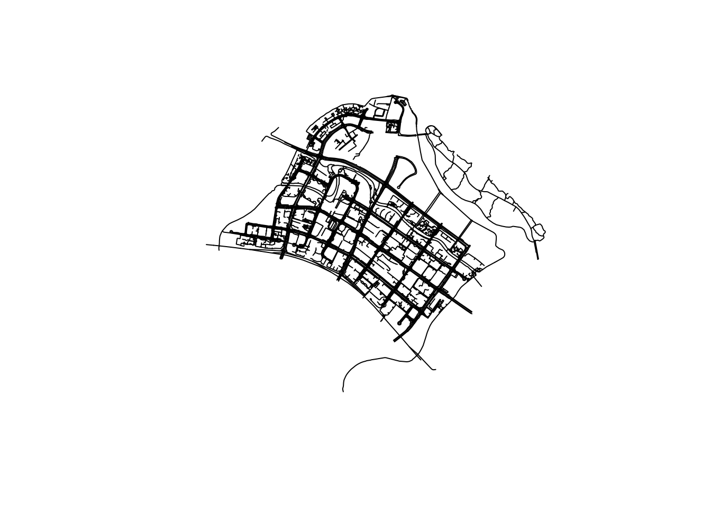
Checking the structure of our data
str(roadspg)Extracting punggol area out of grab using st_intersection() so we can plot on tmap() later
origin_grab <- read_rds("data/rds/origin_grab.rds")grab_pg <- st_intersection(origin_grab, pg)Checking the structure of our data again
str(grab_pg)sf [278 × 17] (S3: sf/tbl_df/tbl/data.frame)
$ trj_id : chr [1:278] "25142" "82931" "63521" "58685" ...
$ driving_mode : chr [1:278] "car" "car" "car" "car" ...
$ osname : chr [1:278] "ios" "android" "android" "android" ...
$ pingtimestamp: int [1:278] 1554731672 1554811768 1554998495 1555147897 1555231248 1555334485 1555607870 1555684795 1555751335 1555756627 ...
$ speed : num [1:278] 12.25 13.01 12.39 13.12 3.89 ...
$ bearing : int [1:278] 196 236 278 240 194 293 60 238 99 288 ...
$ accuracy : num [1:278] 6 5.5 3.9 4 6 ...
$ weekday : Ord.factor w/ 7 levels "Sun"<"Mon"<"Tue"<..: NA NA NA NA NA NA NA NA NA NA ...
$ start_hr : Factor w/ 24 levels "11","2","0","3",..: 13 6 22 14 8 13 21 23 14 15 ...
$ day : Factor w/ 14 levels "9","16","11",..: 8 1 3 5 13 14 12 9 7 7 ...
$ SUBZONE_N : chr [1:278] "NORTHSHORE" "NORTHSHORE" "NORTHSHORE" "NORTHSHORE" ...
$ SUBZONE_C : chr [1:278] "PGSZ01" "PGSZ01" "PGSZ01" "PGSZ01" ...
$ PLN_AREA_N : chr [1:278] "PUNGGOL" "PUNGGOL" "PUNGGOL" "PUNGGOL" ...
$ PLN_AREA_C : chr [1:278] "PG" "PG" "PG" "PG" ...
$ REGION_N : chr [1:278] "NORTH-EAST REGION" "NORTH-EAST REGION" "NORTH-EAST REGION" "NORTH-EAST REGION" ...
$ REGION_C : chr [1:278] "NER" "NER" "NER" "NER" ...
$ geometry :sfc_POINT of length 278; first list element: 'XY' num [1:2] 35549 43926
- attr(*, "sf_column")= chr "geometry"
- attr(*, "agr")= Factor w/ 3 levels "constant","aggregate",..: NA NA NA NA NA NA NA NA NA NA ...
..- attr(*, "names")= chr [1:16] "trj_id" "driving_mode" "osname" "pingtimestamp" ...Plotting Punggol area using grab_pg and roadpg, the intersections extracts Punggol area:
tmap_mode('plot')
tm_shape(grab_pg) +
tm_dots() +
tm_shape(roadspg) +
tm_lines()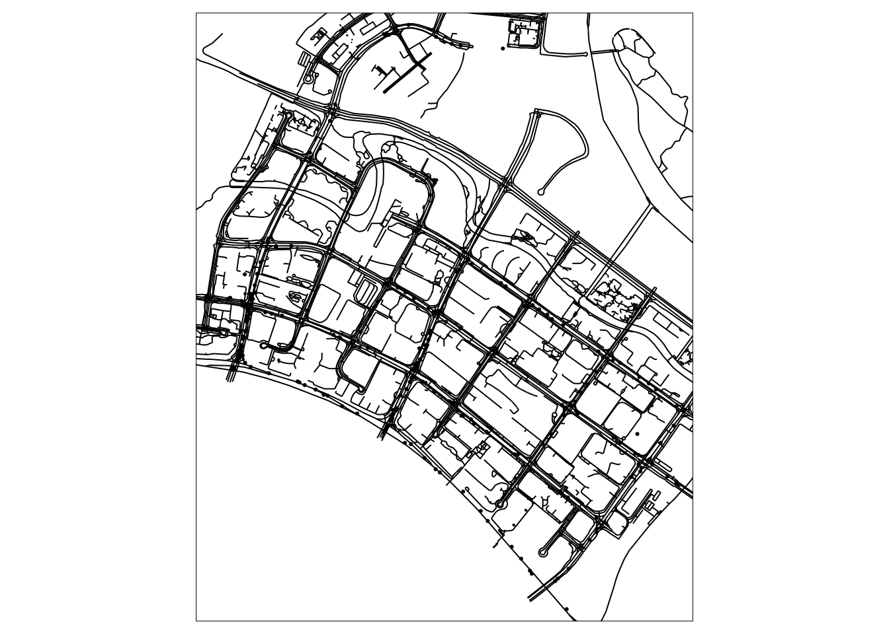
Performing the same analysis for tampines like how we did for punggol just now:
tm <- st_transform(tm, crs = st_crs(sgroads))
st_crs(tm)Coordinate Reference System:
User input: EPSG:3414
wkt:
PROJCRS["SVY21 / Singapore TM",
BASEGEOGCRS["SVY21",
DATUM["SVY21",
ELLIPSOID["WGS 84",6378137,298.257223563,
LENGTHUNIT["metre",1]]],
PRIMEM["Greenwich",0,
ANGLEUNIT["degree",0.0174532925199433]],
ID["EPSG",4757]],
CONVERSION["Singapore Transverse Mercator",
METHOD["Transverse Mercator",
ID["EPSG",9807]],
PARAMETER["Latitude of natural origin",1.36666666666667,
ANGLEUNIT["degree",0.0174532925199433],
ID["EPSG",8801]],
PARAMETER["Longitude of natural origin",103.833333333333,
ANGLEUNIT["degree",0.0174532925199433],
ID["EPSG",8802]],
PARAMETER["Scale factor at natural origin",1,
SCALEUNIT["unity",1],
ID["EPSG",8805]],
PARAMETER["False easting",28001.642,
LENGTHUNIT["metre",1],
ID["EPSG",8806]],
PARAMETER["False northing",38744.572,
LENGTHUNIT["metre",1],
ID["EPSG",8807]]],
CS[Cartesian,2],
AXIS["northing (N)",north,
ORDER[1],
LENGTHUNIT["metre",1]],
AXIS["easting (E)",east,
ORDER[2],
LENGTHUNIT["metre",1]],
USAGE[
SCOPE["Cadastre, engineering survey, topographic mapping."],
AREA["Singapore - onshore and offshore."],
BBOX[1.13,103.59,1.47,104.07]],
ID["EPSG",3414]]roadstm <- st_intersection(sgroads, tm)
grab_tm <- st_intersection(origin_grab, tm)tmap_mode('plot')
tm_shape(grab_tm) +
tm_dots() +
tm_shape(roadstm) +
tm_lines()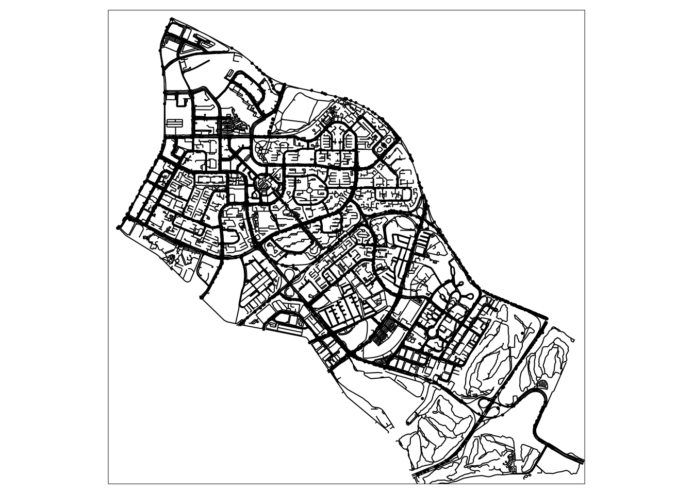
4.1 Punggol Network Kernel Densty Estimation (NKDE) Analysis
roadspg <- st_cast(roadspg, "LINESTRING")lixelspg <- lixelize_lines(roadspg,
750,
mindist = 375)samplespg <- lines_center(lixelspg)The densities show high traffic flow in punggol area like shopping malls or heavy human flow area
densitiespg <- nkde(roadspg,
events = grab_pg,
w = rep(1,nrow(grab_pg)),
samples = samplespg,
kernel_name = "quartic",
bw = 300,
div= "bw",
method = "simple",
digits = 1,
tol = 1,
grid_shape = c(1,1),
max_depth = 8,
agg = 5, #we aggregate events within a 5m radius (faster calculation)
sparse = TRUE,
verbose = FALSE)Importing densitiespg due to the large file size
write_rds(densitiespg, "data/rds/densitiespg.rds")densitiespg <- read_rds("data/rds/densitiespg.rds")samplespg$density <- densitiespg
lixelspg$density <- densitiespgsamplespg$density <- samplespg$density*1000
lixelspg$density <- lixelspg$density*1000tmap_mode('plot')
tm_shape(lixelspg) +
tm_lines(col="density") +
tm_shape(grab_pg) +
tm_dots()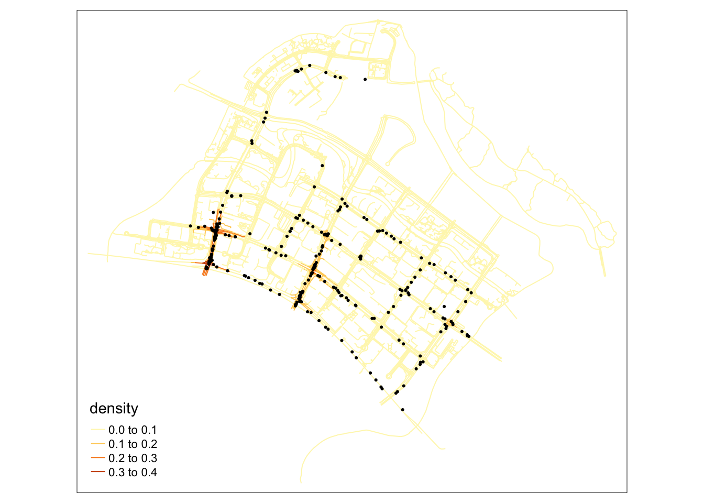
4.2 Tampines Network Kernel Densty Estimation (NKDE) Analysis
roadstm <- st_collection_extract(roadstm, "LINESTRING")
roadstm <- st_cast(roadstm, "LINESTRING")lixelstm <- lixelize_lines(roadstm,
750,
mindist = 375)samplestm <- lines_center(lixelstm)The densities show high traffic flow in punggol area like shopping malls or heavy human flow area
densitiestm <- nkde(roadstm,
events = grab_tm,
w = rep(1,nrow(grab_tm)),
samples = samplestm,
kernel_name = "quartic",
bw = 300,
div= "bw",
method = "simple",
digits = 1,
tol = 1,
grid_shape = c(1,1),
max_depth = 8,
agg = 5, #we aggregate events within a 5m radius (faster calculation)
sparse = TRUE,
verbose = FALSE)write_rds(densitiestm, "data/rds/densitiestm.rds")densitiestm <- read_rds("data/rds/densitiestm.rds")samplestm$density <- densitiestm
lixelstm$density <- densitiestmsamplestm$density <- samplestm$density*1000
lixelstm$density <- lixelstm$density*1000tmap_mode('plot')
tm_shape(lixelstm) +
tm_lines(col="density") +
tm_shape(grab_tm) +
tm_dots()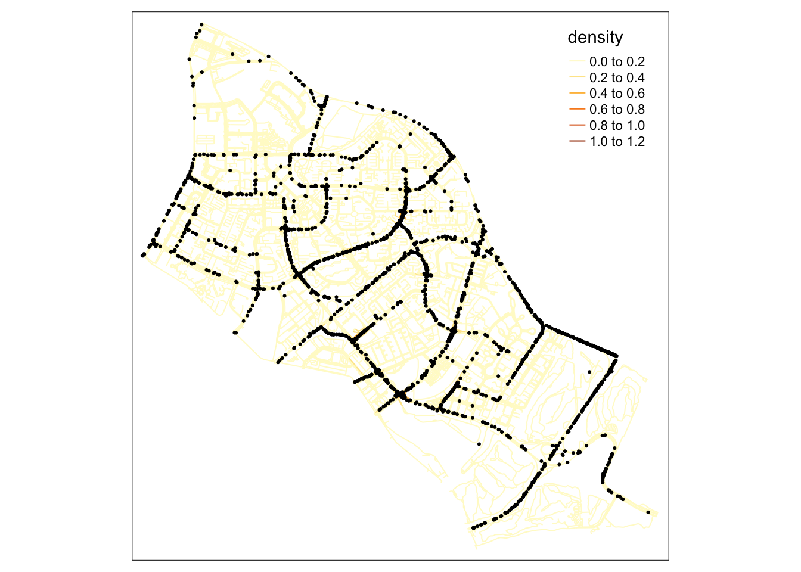
5. Temporal Network Kernel Density Estimation (TNKDE)
grab_pg$pingtimestamp <- as_datetime(grab_pg$pingtimestamp)grab_pg <- grab_pg %>%
mutate(hrday = hour(pingtimestamp))5.1 Converting the Date field to a numeric field (counting days)
ggplot(grab_pg) +
geom_histogram(aes(x = hrday), bins = 30, color = "white")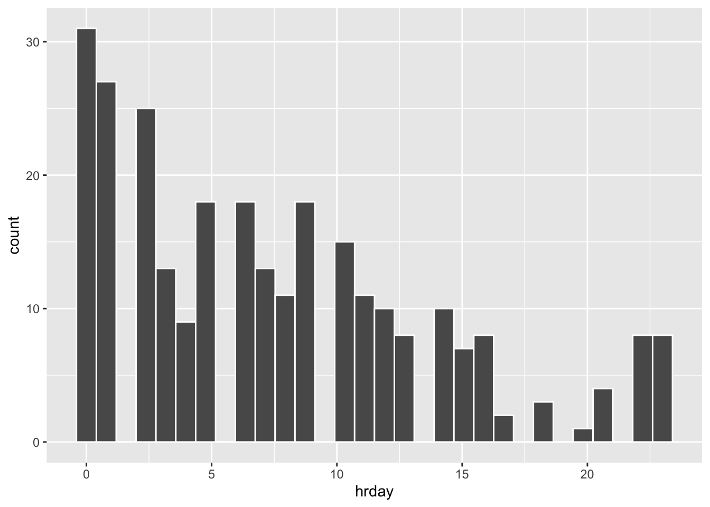
grab_pg_tnke <- subset(grab_pg, grab_pg$hrday >= 1)w <- rep(1,nrow(grab_pg))
samples <- seq(0, max(grab_pg$hrday), 5)
time_kernel_values <- data.frame(
bw_10 = tkde(grab_pg$hrday, w = w, samples = samples, bw = 10, kernel_name = "quartic"),
bw_20 = tkde(grab_pg$hrday, w = w, samples = samples, bw = 20, kernel_name = "quartic"),
bw_30 = tkde(grab_pg$hrday, w = w, samples = samples, bw = 30, kernel_name = "quartic"),
bw_40 = tkde(grab_pg$hrday, w = w, samples = samples, bw = 40, kernel_name = "quartic"),
bw_50 = tkde(grab_pg$hrday, w = w, samples = samples, bw = 50, kernel_name = "quartic"),
bw_60 = tkde(grab_pg$hrday, w = w, samples = samples, bw = 60, kernel_name = "quartic"),
time = samples
)df_time <- reshape2::melt(time_kernel_values,id.vars = "time")
df_time$variable <- as.factor(df_time$variable)ggplot(data = df_time) +
geom_line(aes(x = time, y = value)) +
facet_wrap(vars(variable), ncol=2, scales = "free") +
theme(axis.text = element_text(size = 5))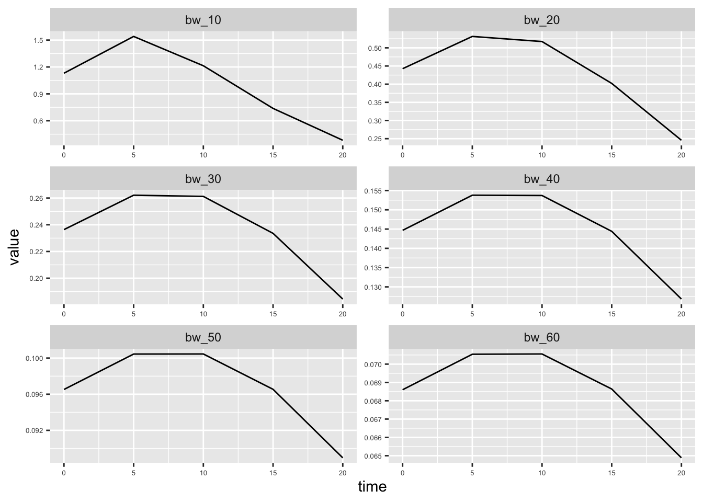
bw1 <- bw.bcv(grab_pg$hrday, nb = 10, lower = 1, upper = 10)
bw2 <- bw.ucv(grab_pg$hrday, nb = 10, lower = 1, upper = 10)
#bw3 <- bw.SJ(grab_pg$hrday, nb = 10, lower = 1, upper = 10)
time_kernel_values <- data.frame(
bw_bcv = tkde(grab_pg$hrday, w = w, samples = samples, bw = bw1, kernel_name = "quartic"),
bw_ucv = tkde(grab_pg$hrday, w = w, samples = samples, bw = bw2, kernel_name = "quartic"),
#bw_SJ = tkde(grab_pg$hrday, w = w, samples = samples, bw = bw3, kernel_name = "quartic"),
time = samples
)
df_time <- reshape2::melt(time_kernel_values,id.vars = "time")
df_time$variable <- as.factor(df_time$variable)
ggplot(data = df_time) +
geom_line(aes(x = time, y = value)) +
facet_wrap(vars(variable), ncol=2, scales = "free") +
theme(axis.text = element_text(size = 5))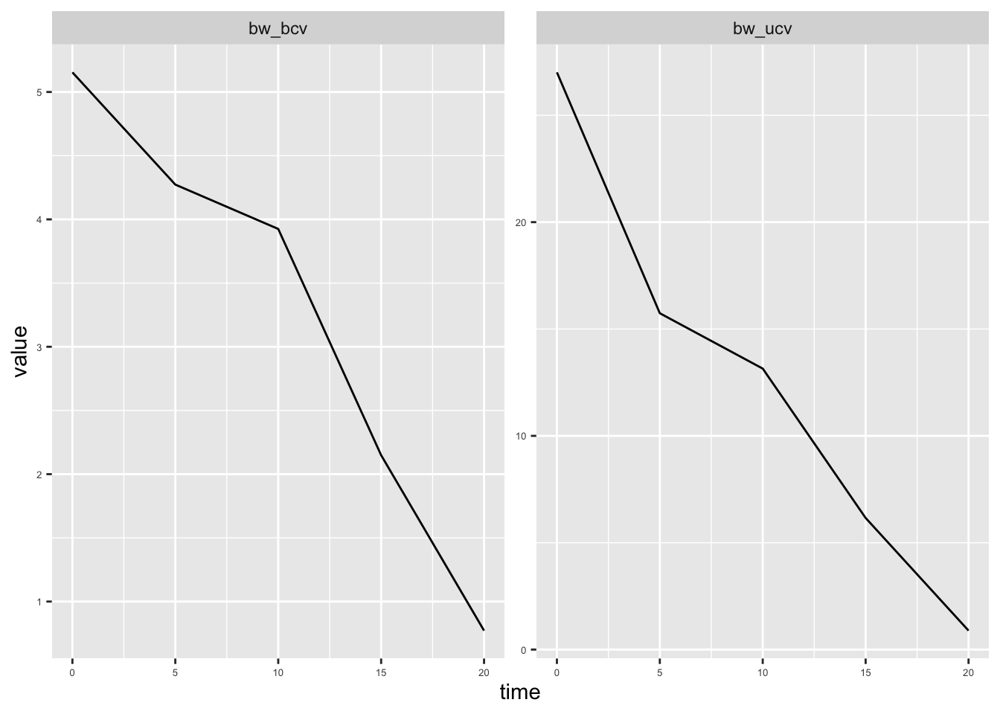
Spatial dimension, investigating the spatial dimension.
# loading the road network
data(roadspg)
tm_shape(roadspg) +
tm_lines(col = "black") +
tm_shape(grab_pg) +
tm_dots(col = "red", size = 0.1)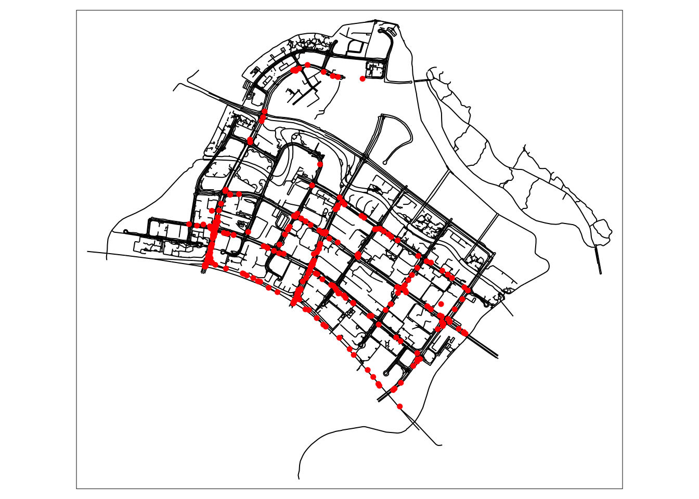
# calculating the densities
nkde_densitiespg <- nkde(lines = roadspg,
events = grab_pg,
w = rep(1,nrow(grab_pg)),
samples = samplespg,
kernel_name = "quartic",
bw = 450,
adaptive = TRUE, trim_bw = 900,
method = "discontinuous",
div = "bw",
max_depth = 10,
digits = 2, tol = 0.1, agg = 5,
grid_shape = c(1,1),
verbose = FALSE)write_rds(nkde_densitiespg, "data/rds/nkde_densitiespg.rds")nkde_densitiespg <- read_rds("data/rds/nkde_densitiespg.rds")samplespg$density <- nkde_densitiespg$k * 1000tm_shape(samplespg) +
tm_dots(col = "density", style = "kmeans", n = 8, palette = "viridis", size = 0.05) +
tm_layout(legend.outside = TRUE)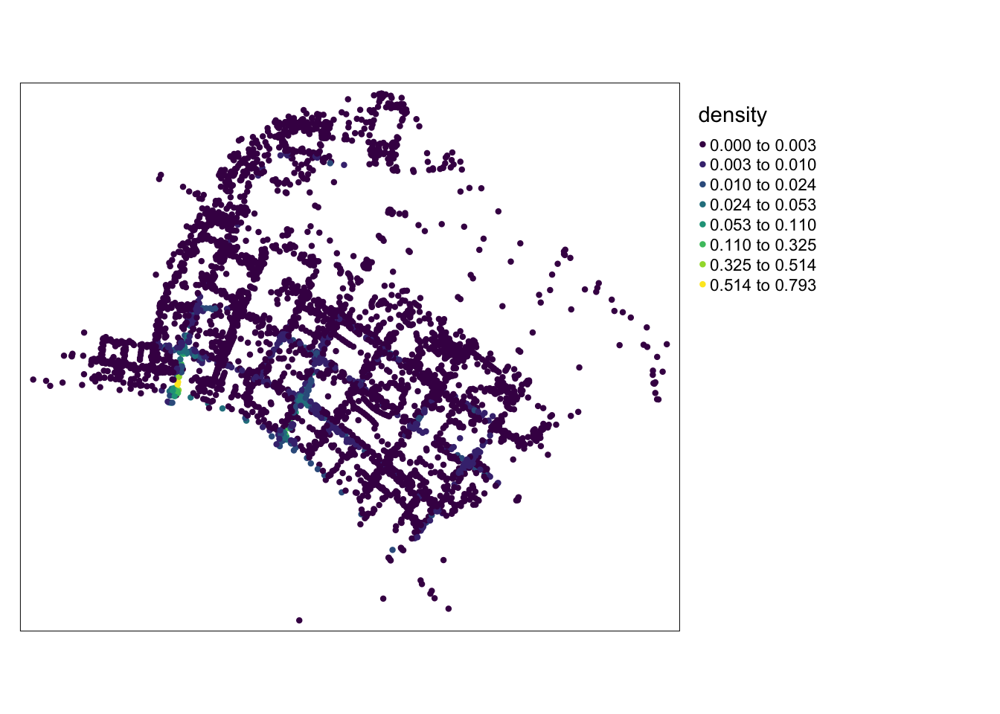
# choosing sample in times (every 10 days)
sample_time <- seq(0, max(grab_pg$hrday), 1)
# calculating densities
tnkde_densitiespg <- tnkde(lines = roadspg,
events = grab_pg,
time_field = "hrday",
w = rep(1, nrow(grab_pg)),
samples_loc = samplespg,
samples_time = sample_time,
kernel_name = "quartic",
bw_net = 1000, bw_time = 2,
adaptive = TRUE,
trim_bw_net = 24,
trim_bw_time = 1,
method = "discontinuous",
div = "bw", max_depth = 10,
digits = 2, tol = 0.01,
agg = 15, grid_shape = c(1, 1),
verbose = FALSE)write_rds(tnkde_densitiespg, "data/rds/tnkde_densitiespg.rds")tnkde_densitiespg <- read_rds("data/rds/tnkde_densitiespg.rds")# creating a color palette for all the densities
all_densities <- c(tnkde_densitiespg$k)
color_breaks <- classIntervals(all_densities, n = 10, style = "kmeans")
# generating a map at each sample time
all_maps <- lapply(1:ncol(tnkde_densitiespg$k), function(i){
time <- sample_time[[i]]
#date <- as.Date(grab_pg$hrday) + time
samplespg$density <- tnkde_densitiespg$k[,i]
map1 <- tm_shape(samplespg) +
tm_dots(col = "density", size = 0.01,
breaks = color_breaks$brks, palette = plasma(10, direction = -1)) +
tm_layout(legend.show=FALSE, main.title = paste("TNKDE OF GRAB TRIP ORIGINS @ PUNGGOL", time, ":00"), main.title.size = 0.5)
return(map1)
})
# creating a gif with all the maps
tmap_animation(all_maps, filename = "images/animated_map.gif",
width = 1000, height = 1000, dpi = 300, delay = 50)Creating frames
================================================================================
Creating animation
Animation saved to /Users/fangqilim/fangqi611/IS415-GAA/Take-home_Ex/Take-home_Ex01/images/animated_map.gif knitr::include_graphics("images/animated_map.gif")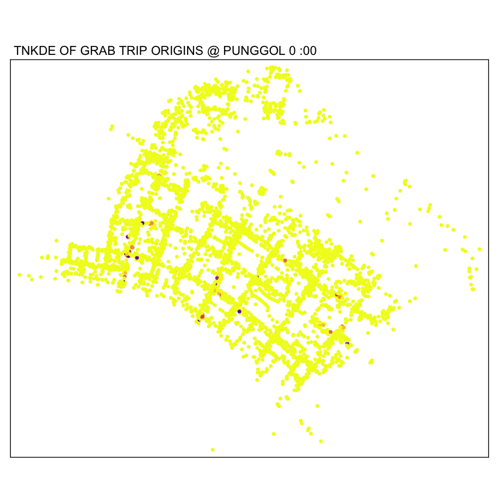
#6. Describe the spatial patterns revealed by the kernel density maps.
The KDE maps shows us the high density areas with high grab traffic in Singapore, this can be seen from the high density, this means more grab cars will be cluttered in those areas. We can see this in the context of Punggol (NKDE analysis) such as shopping malls or residential complexes where demand is higher. While in Tampines, higher demand is observed at commercial centers or transportation hubs.
Based on the Network Kernel Density Estimation (NKDE) analysis for both neighborhoods, Tampines have a higher density than Punggol.
By performing Temporal Network Kernel Density Estimation (TNKDE) analysis on Punggol we can see the hour variation of demand we can see it is usually the peak hours when commuters are travelling in the morning, afternoon and at night when getting to work most probably.
While we can see when does grab face demand, another perspective we can consider is that Singaporeans do use grab hailing services heavily as it is the main grab hailing company Singaporeans use (despite having other brands like Gojek, ComfortDelgro). The demand of grab reflects the busy and hustling lifestyle of Singaporeans.
7. Learning Points
7.1 Solving Coding Issues and Personal Learning Points
While it might sound like a no brainer to seek help and look for other methods when your code isn’t working, but when I am too stuck on an issue I will forget to think broader. I believe this take- home ex1 is a good reminder to me that I should look beyond and further than what is displayed in front of me. I believe, this is a good skill that will prepare me to be a better data scientist in the future.
For example, having to load large codes like origin_grab and destination_grab, it was only with Prof’s Kam help that I remembered that I can save it as a rds file, and this saves me time and prevent my R from lagging.